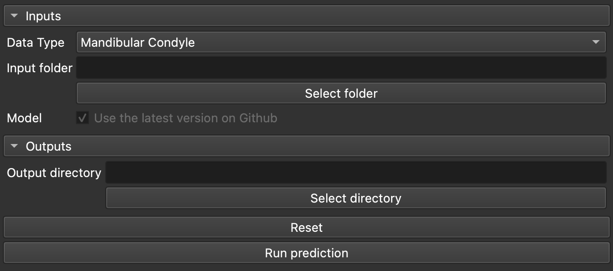
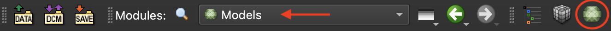
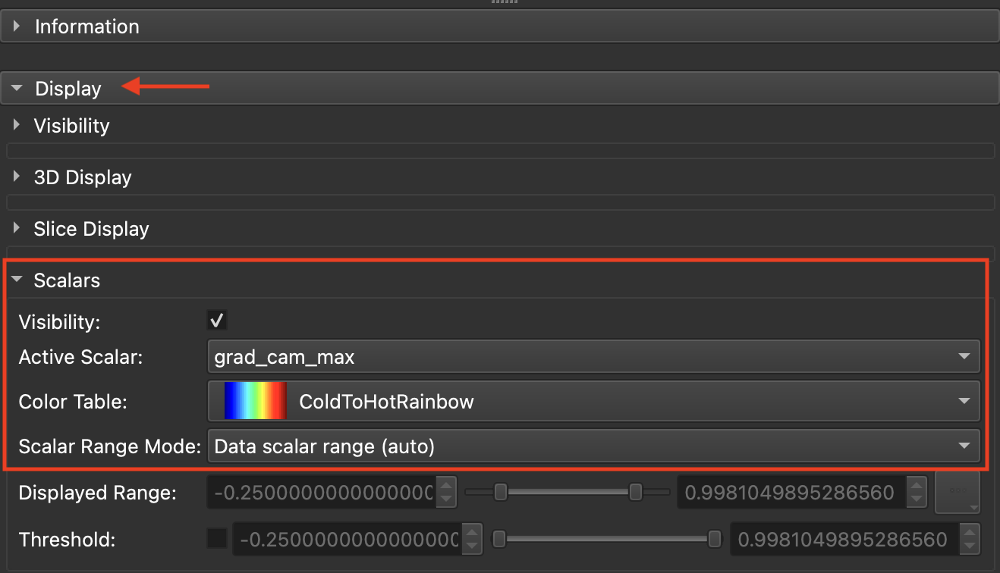
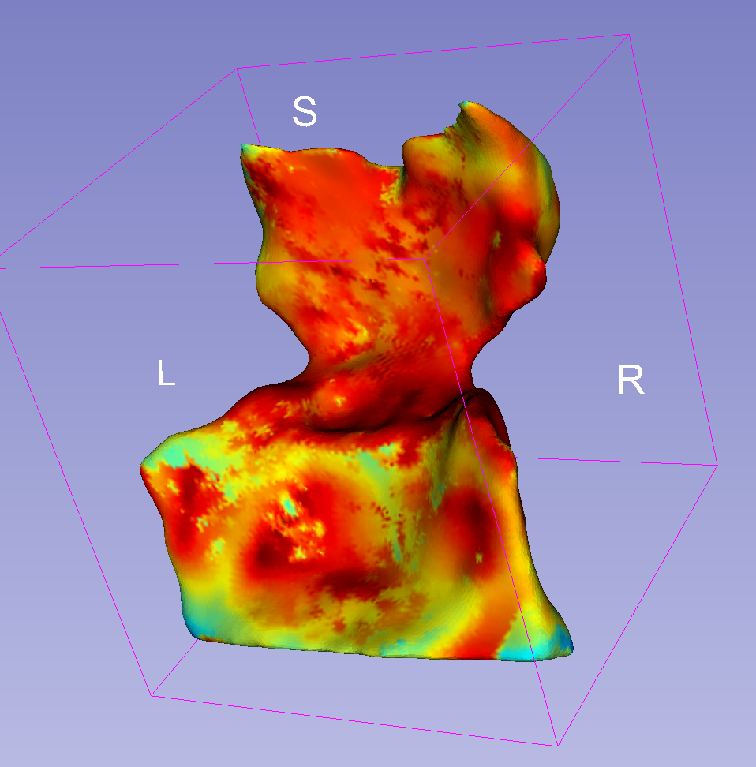

DOCShapeAXI : classer une forme 3D et voir ce qui a guidé la décision
DOCShapeAXI prend des maillages déjà segmentés et les range dans une catégorie : un stade de sévérité, la présence ou l'absence d'obstruction, ou un ratio continu selon le cas. Pour chaque forme qu'il classe, il écrit aussi directement sur le maillage une carte montrant où le réseau a regardé le plus attentivement pour prendre sa décision.
Cette page décrit le module Slicer legacy. Pour l'utiliser via un serveur VISOR : voir DOCShapeAXI avec VISOR et, pour le flux de travail général, Utiliser VISOR.
Quand s'en servir
À utiliser dès que vous avez des formes 3D déjà extraites, condyles, voies aériennes, défauts osseux de fente, et que vous voulez une classification automatique plutôt qu'une lecture visuelle cas par cas, avec en prime une carte qui donne une piste sur le raisonnement du modèle. DOCShapeAXI ne segmente rien lui-même : les maillages .vtk que vous lui donnez doivent déjà exister, produits par un autre outil (AMASSS pour les condyles, une segmentation des voies aériennes, etc.).
Le type de données choisi est la seule chose qui décide du modèle exécuté et des catégories obtenues :
- Mandibular Condyle : un stade de sévérité parmi 4 classes.
- Nasopharynx Airway Obstruction, trois résultats produits l'un après l'autre en une seule exécution : présence ou absence d'obstruction (2 classes), un stade de sévérité (4 classes) et un ratio continu d'obstruction entre 0 et 100.
- Alveolar Bone Defect in Cleft : un stade de sévérité parmi 4 classes.
Pour les trois stades de sévérité, les 4 classes sont en réalité des quarts d'une échelle continue de 0 à 100 : la classe 1 couvre le quart bas, la classe 4 le quart haut.
Ce qu'il vous faut, ce que vous obtenez
À fournir
- Un dossier de maillages
.vtkdéjà segmentés, tous du même type de forme - Le type de données choisi dans la liste : condyle, voies aériennes ou fente
- Un dossier de sortie, créé à l'avance avant le lancement
Ce qui sort
- Un csv qui liste chaque maillage avec sa prédiction, une colonne par tâche
- Une copie de chaque maillage, par tâche, portant la carte d'explicabilité comme scalaire par point
- Vos maillages d'origine ne sont pas modifiés
Étapes
- Choisissez le type de données. Condyle mandibulaire, obstruction des voies aériennes ou défaut osseux de fente. Ce choix seul décide du modèle téléchargé et des catégories obtenues.
- Désignez le dossier d'entrée. Il ne doit contenir que des maillages
.vtkdéjà segmentés, du type que vous venez de choisir. - Créez un dossier de sortie et désignez-le. Au premier lancement sur ce dossier, le modèle entraîné correspondant est téléchargé automatiquement (environ 70 Mo).
- Lancez. Pour les voies aériennes, trois passes s'enchaînent automatiquement : obstruction, sévérité, ratio ; pour les deux autres types, une seule passe suffit. Chaque maillage reçoit ensuite sa carte d'explicabilité, sans aucune action de votre part.

Lire le résultat
Le csv de prédictions ajoute une colonne par tâche à votre liste de maillages : une classe (un entier) pour un stade de sévérité ou une décision binaire d'obstruction, un nombre entre 0 et 100 pour le ratio continu des voies aériennes. Aucun score de confiance n'accompagne la classe : DOCShapeAXI indique seulement la catégorie retenue, pas à quel point la décision était serrée entre deux classes voisines.
Pour la carte d'explicabilité, ouvrez le maillage produit dans le sous-dossier d'explicabilité de cette tâche. Dans le module Models de Slicer, sous l'onglet Scalars, réglez Active Scalar sur le tableau qui porte le nom de la classe qui vous intéresse (un tableau par classe pour une tâche de classification, un seul tableau pour un ratio continu), puis appliquez la table de couleurs ColdToHotRainbow. Les zones chaudes sont celles qui ont le plus pesé en faveur de cette classe ; les zones froides ou nulles n'ont pas particulièrement retenu l'attention du modèle pour cette classe.
Le modèle décide en combinant deux sources : la forme d'un nuage de points échantillonné et un rendu de plusieurs vues du maillage. La carte d'explicabilité ne décrit que la seconde. Si une décision s'est surtout appuyée sur la géométrie du nuage de points, la carte que vous voyez paraîtra pâle : sans rien qui vous indique que c'en est la raison, plutôt qu'une décision sans véritable point d'appui.
Les points échantillonnés sur le maillage ne sont pas tirés de la même façon deux fois. Deux passes sur les mêmes fichiers peuvent donc produire des cartes de saillance légèrement différentes et, pour les cas proches de la frontière entre deux classes, une classe prédite différente.



Si ça coince
Si le dossier désigné n'existe pas encore, le téléchargement du modèle est tout simplement ignoré, et l'erreur n'apparaît que plus tard, quand le modèle essaie de se charger. Créez vous-même le dossier de sortie avant de commencer.
La liste des maillages à traiter n'est reconstruite que si elle n'existe pas déjà dans le dossier de sortie. Si vous déposez d'autres maillages dans le dossier d'entrée sans changer le dossier de sortie, ils ne seront tout simplement pas traités.
Le modèle téléchargé n'est pas mis en cache : chaque nouveau dossier de sortie le retélécharge en entier. Sur plusieurs lots, réutilisez le même dossier de sortie quand c'est possible, ou nettoyez les anciens.
Les colonnes de prédiction sont écrasées sur place à chaque nouvelle exécution, mais les colonnes laissées par une autre tâche ne sont jamais effacées : elles restent côte à côte dans le csv.
Comment citer
Si vous avez utilisé DOCShapeAXI dans un travail de recherche, citez :
Prieto JC, Miranda F, Gurgel M, Anchling L, Hutin N, Barone S, Al Turkestani N, Aliaga A, Yatabe M, Bianchi J, Cevidanes L. ShapeAXI: Shape Analysis Explainability and Interpretability. Proc. SPIE 12931, Medical Imaging 2024: Imaging Informatics for Healthcare, Research, and Applications, 1293116, 2024.
doi:10.1117/12.3007053. Le cadre que ce module pilote : classer une forme 3D, puis montrer quelle partie de la surface a emporté la décision.
Contexte, à ne pas citer pour l'outil
- Mattos et al., Journal of Dentistry 2025: Explainable artificial intelligence to quantify adenoid hypertrophy and airway obstruction. Le même cadre appliqué aux voies aériennes : un exemple complet de ce que produisent les cartes d'explication, et de la façon de les lire.
- Miranda et al., Scientific Reports 2023: Interpretable artificial intelligence for classification of alveolar bone defect in patients with cleft lip and palate. Un autre cas clinique traité de la même façon, en accès libre.
- Selvaraju et al., ICCV 2017: Grad-CAM: Visual Explanations from Deep Networks via Gradient-based Localization. La méthode derrière les cartes de chaleur que le module affiche, et ses limites, qu'il vaut mieux connaître avant de les interpréter.
La bibliographie complète de l'outil, ce qui a été trouvé, et ce qui a été cherché sans rien trouver, est dans ses sources.
Comment ça marche vraiment → La fiche Atlas : les deux branches du réseau, ce qui est réellement rétropropagé dans la carte d'explicabilité, la version deshapeaxi attendue, et les points fragiles trouvés dans le code.